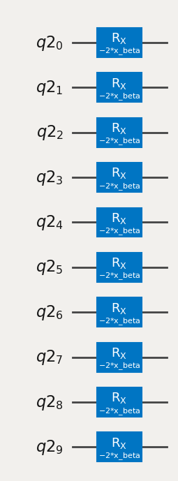

Comparison of Different Optimizers for QAOA on a Max Cut instance#
In this notebook different optimizers for the QAOA parameters are compared. The approximation ratios obtained by using the different optimizers are compared, as well as the value of the QAOA parameters.
1. Install and import the python QAOA package if needed#
import subprocess
import sys
try:
from qaoa import QAOA, initialstates, mixers, problems
print("qaoa is already installed.")
except ImportError:
print("qaoa is not installed. Installing now...")
subprocess.check_call([sys.executable, "-m", "pip", "install", "qaoa"])
from qaoa import QAOA, initialstates, mixers, problems
qaoa is already installed.
import networkx as nx
from plotroutines import plot_ApproximationRatio
from qiskit_algorithms.optimizers import COBYLA
2. Create Barabási–Albert graph instance, more examples can be found here https://github.com/OpenQuantumComputing/data#
G = nx.read_gml("data/w_ba_n10_k4_0.gml")
nx.draw_networkx(G)
mincost = -8.657714089848158 # precalculated

3. Create a QAOA instance#
the initial state as the uniform superposition
the problem is the MaxCut of the graph G
the mixer is the standard X mixer
qaoa = QAOA(
initialstate=initialstates.Plus(),
problem=problems.MaxCut(G=G),
mixer=mixers.X(),
optimizer=[COBYLA, {"maxiter": 100, "tol": 1e-6}],
)
4.1 draw the circuit for the initial state#
qaoa.createParameterizedCircuit(1)
qaoa.initialstate.circuit.draw()
┌───┐
q3_0: ┤ H ├
├───┤
q3_1: ┤ H ├
├───┤
q3_2: ┤ H ├
├───┤
q3_3: ┤ H ├
├───┤
q3_4: ┤ H ├
├───┤
q3_5: ┤ H ├
├───┤
q3_6: ┤ H ├
├───┤
q3_7: ┤ H ├
├───┤
q3_8: ┤ H ├
├───┤
q3_9: ┤ H ├
└───┘4.2 draw the circuit for the problem#
qaoa.problem.circuit.draw("mpl")
4.3 draw the circuit for the mixer#
qaoa.mixer.circuit.draw("mpl")

5. Run optimization to depth = 10#
maxdepth = 10
qaoa.optimize(depth=maxdepth)
2024-08-26 09:14:34 [info ] Calculating energy landscape for depth p=1... file=qaoa.qaoa func=sample_cost_landscape
1 0
2024-08-26 09:14:34 [info ] Executing sample_cost_landscape file=qaoa.qaoa func=sample_cost_landscape
2024-08-26 09:14:34 [info ] parameters: 2 file=qaoa.qaoa func=sample_cost_landscape
2024-08-26 09:14:34 [info ] Done execute file=qaoa.qaoa func=sample_cost_landscape
2024-08-26 09:14:38 [info ] Done measurement file=qaoa.qaoa func=sample_cost_landscape
2024-08-26 09:14:38 [info ] Calculating Energy landscape done file=qaoa.qaoa func=sample_cost_landscape
2024-08-26 09:14:39 [info ] cost(depth 1 = -6.895188047716615 file=qaoa.qaoa func=optimize
2024-08-26 09:14:40 [info ] cost(depth 2 = -7.294962636367336 file=qaoa.qaoa func=optimize
2024-08-26 09:14:42 [info ] cost(depth 3 = -7.369124612119966 file=qaoa.qaoa func=optimize
2024-08-26 09:14:44 [info ] cost(depth 4 = -7.869464742753941 file=qaoa.qaoa func=optimize
2024-08-26 09:14:47 [info ] cost(depth 5 = -7.98158143385825 file=qaoa.qaoa func=optimize
2024-08-26 09:14:49 [info ] cost(depth 6 = -8.142873484145325 file=qaoa.qaoa func=optimize
2024-08-26 09:14:52 [info ] cost(depth 7 = -8.207987713340518 file=qaoa.qaoa func=optimize
2024-08-26 09:14:54 [info ] cost(depth 8 = -8.248029720935907 file=qaoa.qaoa func=optimize
2024-08-26 09:14:58 [info ] cost(depth 9 = -8.203060287368103 file=qaoa.qaoa func=optimize
2024-08-26 09:15:03 [info ] cost(depth 10 = -8.249611081615347 file=qaoa.qaoa func=optimize
6. Below the approximation ratios are plotted for the different optimizers. From the figure we see that the different optimizers give roughly the same approximation ratio.#
plot_ApproximationRatio(
qaoa, maxdepth, mincost=mincost, maxcost=0, label="QAOA", style="x-"
)